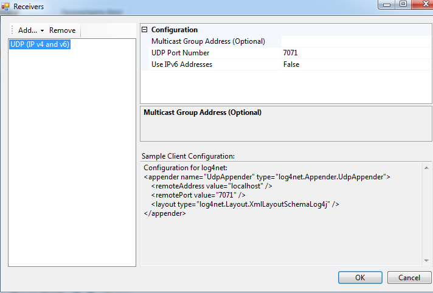
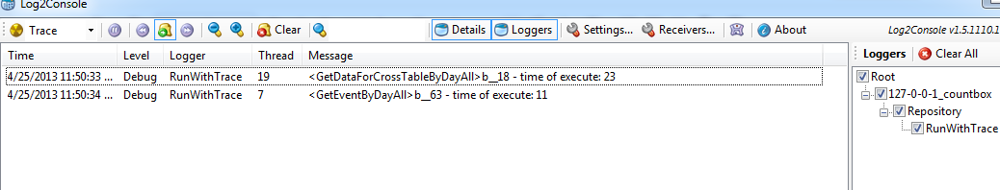
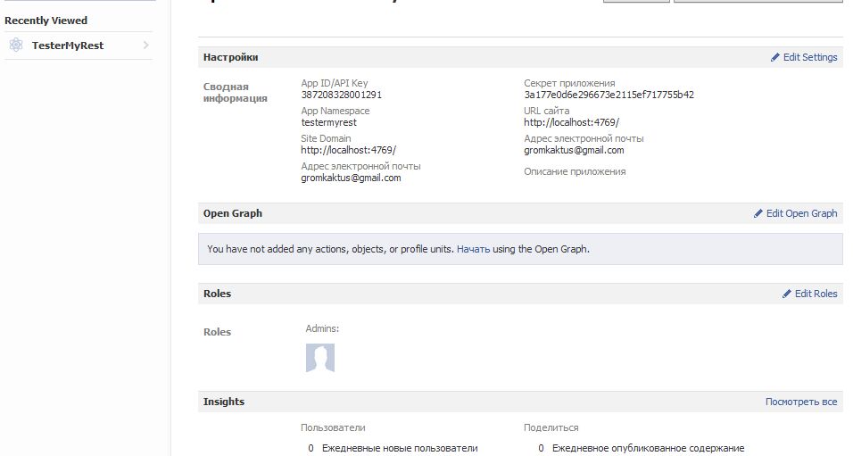
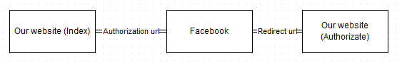
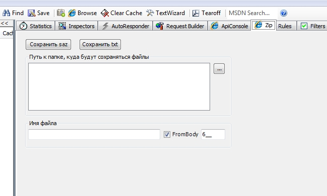

Eugene Pyl - Notes
Xamarin Dev Days in Warsaw - 24 September, 2016
Hi All, it is my overview of Xamarin Dev Days - short summary. Hope it will be useful to create an impression what you can expect from this event.
My stream technology is server-side .NET or ASP.NET MVC. My current project is on .NET platform, the main technology is Windows Workflow Foundation and I am not using Xamarin platform. But I had a small experience in Xamarin that I got during working on my previous project.
Some time ago I had a chance to visit Xamarin Dev Days event in Warsaw. It was one day event in Warsaw Microsoft office. There were two part: the first one is generic information about Xamarin ecosystem and Azure Mobile Apps. The second one is hands on lab. So this presentation has been created to summarize and do a short recap mentioned event.
Agenda:
- Introduction to Xamarin
- Xamarin.Forms
- Azure Mobile Apps
- Sample application
- Resources

The first thing that you should keep in mind when you are talking about Xamarin is that you are able to write application not using Visual Studio on Windows only, but also Xamarin Studio on Mac. Basically, as I understand, usually people are using Visual Studio to develop Android and Phone applications and Xamarin Studio on Mac to develop IOS application. But, of course, the team is using one code base. The reason of this approach, that it is much more quicker to build IOS application on MAC directly, without remote building using Visual Studio on Windows.
The second thing is that Xamarin is not only about developing cross-platform applications using Visual Studio or Xamarin Studio, but Xamarin also provides possibility to test you application on various number of devices using Xamarin Cloud. As you can imagine, it is very expensive to buy all set of mobile devices for testing, so this cloud allows you to run your application on thousand of real devices in the cloud, analyze detailed test reports with results, screenshots, and performance metrics. Also it allows you to measure performance of your application. Sounds very cool, but there was a question from Xamarin Dev Days presenter about if there is someone who is using this cloud and nobody answered.
The third thing is about building and continuous integration. Actually it is not about Xamarin but aboutTFS(Team Foundation Server). You are able to install it on your private server or it is possible to use Visual Studio Online service from Microsoft. It is free for small teams. It provides opportunity to work with your code (git), use agile board to organize your work, set up your continuous integration project (pure version of team city), create test cases.
The last one is about distributing and monitoring. I can’t say a lot about distributing as I have never put any application to stores. As for monitoring, there is Xamarin Insight. It is the same approach as Visual Studio Application Insights. It is an extensible analytics service that helps you understand the performance and usage of your live mobile application. It's designed for developers, to help you continuously improve the performance and usability of your app. It allows:
- see user sessions in real time
- see which users are being affected by which errors
- see stacktraces for each exception
- see device stats for each exception (operating system, app version, network status, device orientation, jalbreak status, and bluetooth status)
- see advanced reporting and filtering of aggregate exception statistics
- setup webhooks for triggering actions on certain Insights events
- integrate with third-party services (Campire, Github, HipChat, Jira, PivotalTracker, and Visual Studio Online)
Approaches:
- Separate solutions for each platform (Android, IOS, Windows)
- Many projects, many languages, many teams
- One universal solution (JS + HTML + CSS) - Cordova
- Slow performance, limited native API
- Xamarin approach (shared code + platform specific UI)
- Good performance, almost all native API
- ReactNative and NativeScript
- Only Android and IOS (UWP in future)
Here I want to show the main ways to build mobile application.
- Of course, firstly it is native apps. It is clear. Swift, object-C for IOS, java is for Android, C# is for Windows Phone. It means you should have and support many projects and many teams. It is a good option if you are planning to build complex and big mobile application. The best scenario is if this application has only mobile version.
- Universal solution. You are able to use Cordova and build you application using JavaScript. Personally I really like this approach as you are able to build almost any type of application using Javascript now. To execute javascript on server - NodeJs. For desktop application there is Electron framework. Cordova is to create mobile applications.The problem here is performance. The resulting applications are hybrid, meaning that they are neither truly native mobile application (because all layout rendering is done via Web views instead of the platform's native UI framework) nor purely Web-based (because they are not just Web apps, but are packaged as apps for distribution and have access to native device APIs). [link]
- And Xamarin. It looks like win-win strategy if you already have web or desktop application written on .NET. You are able to share code, get native performance (almost, depends how you are creating application, Xamarin.Forms, for example, can create non the best implementation), access to all native API (almost). If there is a new version of OS, need to wait implementation in Xamarin up to one month.
- ReactNative and NativeScript created and supported by Facebook and Telerik. ReactNative hasn’t final version still, but NativeScript has version 2.0. They are the most young libraries in the list. JavaScript is the language to write a code. But unlike Cordova transform Javascript elements to native UI elements. Support Android and IOS now. Microsoft is working to add UWP here (NativeScript). Looks like the most perspective platforms. You are able to use Angular2 + Typescript + NativeScript or ReactJs + ReactNative to write mobile applications and share code also with your web version of application. Probably it is the best frameworks if your application is web first.
Xamarin features
- Produce ARM binary for Apple store
- Produce APK for Android
- Possibility to use only one IDE (Visual Studio)
- Android Hyper-V and IOS Remote emulators
- Designers for IOS, Android and Windows Phone in Visual Studio
- Xamarin Studio for Mac
- MVVM pattern (XAML)
Here I put the main interesting features of Xamarin:
- Xamarin allows to ship native app bundles on the App Store. Ahead-of-Time (AOT) compiler compiles Xamarin.iOS apps directly to native ARM assembly code, meaning your app is a native platform binary.
- As for Android, Xamarin.Android uses just-in-time compilation for sophisticated runtime optimization of your app’s performance, meaning your app is a native Android APK.
- Also I talked that we are able to use only one IDE to develop applications in theory.
- Microsoft Visual Studio 2015 includes an Android emulator that you can use as a target for debugging your Xamarin.Android app: Visual Studio Emulator for Android. This emulator uses the Hyper-V capabilities of your development computer, resulting in faster launch and execution times than the default emulator that comes with the Android SDK. Also it is possible to debug IOS in Windows using remote simulator.
- Visual Studio supports also visual designers to build UI. It works almost the same like it works for WPF.
- The Model-View-ViewModel (MVVM) architectural pattern was invented with XAML in mind. The pattern enforces a separation of the XAML user interface (the View) from the underlying data (the Model) through a class that serves as an intermediary between the View and the Model (the ViewModel). The View and the ViewModel are often connected through data bindings defined in the XAML file. The BindingContext for the View is usually an instance of the ViewModel. link
Sharing code
- Portable class library
- Shared projects
- Upcoming .NET Standard 2.0
Currently there are two ways to write shared code in Xamarin:
- Shared project. Unlike most other project types, a Shared Project has no 'output' assembly. During compilation, the files are treated as part of the referencing project and compiled into that DLL. If you wish to share your code as a DLL then Portable Class Libraries are a better solution. Shared code can be branched based on the platform using compiler directives (eg. using #if __ANDROID__ , as discussed in the Building Cross Platform Applications document).
- Portable library. Only a subset of the .NET framework is available to use, determined by the profile selected (see the Introduction to PCL for more info). Upcoming .net standard 2.0 will support Xamarin. Basically Microsoft introduced a new .NET Standard Library. The .NET Standard Library is a formal specification of .NET APIs that are intended to be available on all .NET runtimes. The motivation behind the Standard Library is establishing greater uniformity in the .NET ecosystem.
Xamarin plugins (nuget)
- Battery
- Connectivity
- Geolocation
- Media
- Settings
- Text to speech
- ...
Another one nice feature of Xamarin is Xamarin plugins that can be downloaded using nuget. These libraries allow you to use functionality that adds cross-platform functionality or abstracts platform specific functionality to a common API, like battery, geolocation, media and so on.
You are able to find the whole list of plugins here.
Xamarin.Forms
- Shared UI
- Pages, layouts, controls
- Two-ways data binding
- Navigation
- Animation
- Dependency service, messaging center
- Xamarin.Forms 2.0 - Performance
- Themes
- Data pages
- Native embedding
Use the Xamarin.Forms API provides a way to quickly build native apps for iOS, Android and Windows completely in C#. Xamarin.Forms is included with Visual Studio.
- Xamarin allows sharing not only code between platforms, but also UI. During compilation created abstract XAML is transformed to platform specific. For example, there is the next XAML element: Entry, what is TextBox in Windows Phone. So we have an platform-specific equivalent for every control from Xamarin.Form.
- There are three main groups in Xamarin.Form:
- A Xamarin.Forms.Page represents a View Controller in iOS or a Page in Windows Phone. On Android each page takes up the screen like an Activity, but Xamarin.Forms Pages are not Activities.
- The Layout class in Xamarin.Forms is a specialized subtype of View, which acts as a container for other Layouts or Views. It typically contains logic to set the position and size of child elements in Xamarin.Forms applications.
- Xamarin.Forms uses the word View to refer to visual objects such as buttons, labels or text entry boxes - which may be more commonly known as controls of widgets.
- Data binding connects two objects, called the source and the target. The source object provides the data. The target object, which must be a bindable property, will consume (and often display) data from the source object.
- Xamarin.Forms provides a number of different page navigation experiences, depending upon the Page type being used: Tabbed Page, Hierarchical Navigation, CarouselPage and so on.
- Xamarin.Forms includes its own animation infrastructure that allows for easy creation of simple animations, while also being versatile enough to create complex animations. The Xamarin.Forms animation classes target different properties of visual elements, with a typical animation progressively changing a property from one value to another over a period of time.
- Xamarin.Forms allows developers to define behavior in platform-specific projects. DependencyService then finds the right platform implementation, allowing shared code to access the native functionality.
- Xamarin.Forms MessagingCenter enables view models and other components to communicate with without having to know anything about each other besides a simple Message contract.
- Native Embedding. Platform-specific controls can be directly added to a Xamarin.Forms layout. It is possible to add platform-specific controls to a Xamarin.Forms layout, and how to override the layout of custom controls in order to correct their measurement API usage.
Azure Mobile Apps

- Stable backend
- Shared server/client code
- Offline sync
- Data storage (tables, sql)
- Authentication (Microsoft, Google, Facebook, Twitter)
- Push notifications
Azure App Service is a fully managed Platform as a Service (PaaS) that brings a rich set of capabilities to web, mobile and integration scenarios.
- Build offline-ready apps with data sync.
- Push Notifications allows you to engage your clients with instant push notifications on any device.
- Authorization using different approaches
- Save data.
Take a look
Want to mention two nice libraries/ applications:
- App Service Helpers (ASH) makes it as easy as possible to add data storage and authentication to your mobile app with Microsoft's Azure App Service Platform. ASH was built with the mobile developer in mind, and requires no previous experience with backends as a service (BaaS). This lib was developed as a supplemental library to Microsoft's Azure Client SDK. Rather than replacing this library, ASH extends it by lowering the barrier to entry for developers who wish to build cloud-connected mobile apps in C#.
- It is a good example how to use Azure Mobile services. Contoso Moments is a photo sharing application that demonstrates the following features of Azure App Service:
- App Service authentication/authorization
- Continuous Integration and deployment
- Mobile app server SDK
- Mobile offline sync client SDK
- Mobile file sync SDK
- Mobile push notifications
References:
There are a list of references and interesting information about Xamarin. Thank you for reading. Please feel free to ask any questions, I will try to answer.
- https://github.com/xamarin/dev-days-labs
- https://www.xamarin.com/dev-days
- http://www.meetup.com/warsawmobiledevelopers/
- https://confluence.infusion.com/pages/viewpage.action?pageId=28582107
- https://confluence.infusion.com/display/innovationpractices/Xamarin+Bootcamp+Training
- https://developer.xamarin.com/
GitVersion + TC - 04 February, 2016
GitVersion is the utility to set up version of deployed assemblies using information from Git.
There is an easy way to set up it on your TC build server. Go to MetaRunner and download MR_GitVersion3.xml file. You should put this file to your build server. The path is C:\ProgramData\JetBrains\TeamCity\config\projects{Project}\pluginData\metaRunners. The first part of this part you can find in Global settings of Team City. Also you have to restart your server after this.
So you will be able to set up GitVersion build step which just gran information about your version from Git tags and put it to your assemblies.
TC to build only commits with tags (RC-*). VCS Root set up:


Trigger:

Notes from [Introduction to Linux] - 21 May, 2015(https://www.edx.org/course/introduction-linux-linuxfoundationx-lfs101x-0)
Linux Filesystem
- Conventional disk filesystems: ext2, ext3, ext4, XFS, Btrfs, JFS,NTFS, etc.
- Flash storage filesystems: ubifs, JFFS2, YAFFS, etc.
- Database filesystems
- Special purpose filesystems: procfs, sysfs, tmpfs, debugfs, etc.
- Windows
- Partition: Disk1
- Filesystem type: NTFS/FAT32
- Mounting Parameters: DriveLetter
- Base Folder of OS: C drive
- Linux
- Partition: /dev/sda1
- Filesystem type: EXT3/EXT4/XFS
- Mounting Parameters: MountPoint
- Base Folder of OS: /
The Filesystem Hierarchy Standard

The Boot Process

Choosing a Linux Distribution

Task: Show information about types in tooltip. The value of a point is the sum of values of types ('one', 'two'). Link - 26 December, 2014

The code:
$(function () {
$('#container').highcharts({
chart: {
type: 'column'
},
tooltip: {
formatter: function () {
var typeInf = '';
var types = this.point.Types;
$.each(types, function (index) {
typeInf += '<b>' + types[index][0] + '</b> ' + types[index][1] + '<br/>';
});
return 'The value for <b>' + this.x +
'</b> is <b>' + this.y + '</b><br/>' + typeInf;
}
},
xAxis: {
categories: ['Green', 'Pink']
},
series: [{
data: [{
name: 'Point 1',
Types: [["one", 1], ["two", 1]],
color: '#00FF00',
y: 2
}, {
name: 'Point 2',
Types: [["one", 2], ["two", 3]],
color: '#FF00FF',
y: 5
}]
}]
});
});
WinRT Checksum for large files - 29 September, 2014
There is a good question about this.
Also there is a code. I have used MD5 algorithm for my purposes.
public async Task<string> GetFileChecksumAsync(string fileName)
{
HashAlgorithmProvider alg = Windows.Security.Cryptography.Core.HashAlgorithmProvider.OpenAlgorithm(HashAlgorithmNames.Md5);
IStorageFile stream = await openFile(fileName);
using (var inputStream = await stream.OpenReadAsync())
{
Windows.Storage.Streams.Buffer buffer = new Windows.Storage.Streams.Buffer(BUFFER_SIZE);
var hash = alg.CreateHash();
while (true)
{
await inputStream.ReadAsync(buffer, BUFFER_SIZE, InputStreamOptions.None);
if (buffer.Length > 0)
hash.Append(buffer);
else
break;
}
return CryptographicBuffer.EncodeToHexString(hash.GetValueAndReset()).ToUpper();
}
}
FuelUX Tree additional behavior - 14 July, 2014
Add "Show All" to the FuelUX Tree like this.
There is the tree plugin. You can add the next code after initialization of the tree:
scope.find('#MyTree').on('selected', function (event, data) {
if (data.target.additionalParameters.id == 0) {
scope.find('#MyTree').find('.tree-item').removeClass('tree-selected').find('i').removeClass('icon-ok').addClass('tree-dot');
scope.find('#MyTree').find('.tree-item:eq(1)').addClass('tree-selected').find('i').removeClass('tree-dot').addClass('icon-ok');
scope.find('#MyTree').find('.tree-folder-header> i.icon-ok').remove();
}
else {
scope.find('#MyTree').find('.tree-item:eq(1)').removeClass('tree-selected').find('i').removeClass('icon-ok').addClass('tree-dot');
if (data.target.additionalParameters.type == 'anyOther') {
data.element.closest('.tree-folder-content').find('.tree-item:gt(0)').removeClass('tree-selected').find('i').removeClass('icon-ok').addClass('tree-dot');
}
}
});
Fixed header/column for HTML table using JQuery - 07 July, 2014
I have created one more plugin for HTML table. It fixes the head of a table on the page. Please see it. The main feature is supporting of overflow parent element.
Some images of plugin:

And another plugin https://bitbucket.org/upyl/fixedcolumn to fix column of table.

Light version of Monodruid - 04 June, 2014
I have created the light version of MonoDroid Unit Testing framework.
Please look and use if you need.
Bootstrap + Recaptcha. Css problem - 07 June, 2013
If you use bootstrap and recaptcha, you may face a problem like wrong padding|margin:
You should add next css style to yours:
body{ line-height:1}
And all will be OK ! Enjoy!
Bootstrap datepicker Week mode view - 28 July, 2013
I have updated bootstrap datepicker to new view mode: week.
The source code is here
ASP.NET MVC and Html.Hidden - 01 April, 2013
There is interesting bug connected with Html.Hidden. There are two model:
public class Model1{
public int ID{get;set;}
public Model2 Model2Model{get;set;}
}
public class Model2{
public int ID{get;set;}
}
Page:
<html>
...
<body>
@Html.Partial("partial"
<body>
</html>
SMO Scripter. Create script of DB - 25 June, 2013
It is possible to create script of MSSQL using SMO: (link)
private static void Main(string[] args)
{
var arguments = args.Select(x => x.ToLower()).ToList();
if (arguments.Count == 0 || arguments.Contains("-help"))
{
Console.WriteLine("-d - Database Name");
Console.WriteLine("-i - Output Sql File Name");
Console.WriteLine("-s - Server Instance");
Console.WriteLine("-u - User Name");
Console.WriteLine("-p - Password");
Console.WriteLine("It should be 'tables.txt' file in folder with names of tables to script; if it does not exist the application scripts all tables with prefix 'GMP_'");
Console.ReadKey();
}
else if (arguments.Count > 1 && arguments.Contains("-d") && args.Contains("-i"))
{
if (arguments.Count <= arguments.IndexOf("-d") + 1)
{
throw new ArgumentException("Database Name");
}
if (arguments.Count <= argumSMO Scripter. Create script of DBents.IndexOf("-i") + 1)
{
throw new ArgumentException("Output Sql File Name");
}
var dbName = arguments[arguments.IndexOf("-d") + 1];
var outputFileName = arguments[arguments.IndexOf("-i") + 1];
var srv = new Server();
if (arguments.Contains("-s") && args.Contains("-u") && arguments.Contains("-p"))
{
if (arguments.Count <= arguments.IndexOf("-s") + 1)
{
throw new ArgumentException("Server Instance");
}
if (arguments.Count <= arguments.IndexOf("-u") + 1)
{
throw new ArgumentException("User Name");
}
if (arguments.Count <= arguments.IndexOf("-p") + 1)
{
throw new ArgumentException("Password");
}
var connection = new ServerConnection(arguments[arguments.IndexOf("-s") + 1], arguments[arguments.IndexOf("-u") + 1], arguments[arguments.IndexOf("-p") + 1]);
srv = new Server(connection);
}
// read names of tables
var tablesFromFile = new List<string>();
if (File.Exists("tables.txt"))
{
using (var file = File.OpenText("tables.txt"))
{
while (file.Peek() > 0)
{
tablesFromFile.Add(file.ReadLine());
}
}
}
Database db = srv.Databases[dbName];
var dropKeys = new Scripter(srv) {Options = {ScriptDrops = true, IncludeIfNotExists = true, DriForeignKeys = true}};
var listOfScripts = new List<Scripter>
{
new Scripter(srv) {Options = {ScriptDrops = true, IncludeIfNotExists =true, DriAllKeys = false}},
new Scripter(srv) {Options = {ScriptDrops = false, ScriptSchema = true, WithDependencies = false, DriIndexes = true, DriClustered = true, IncludeIfNotExists = true, DriAllKeys = false}},
new Scripter(srv) {Options = {ScriptDrops = false, ScriptSchema = true, DriDefaults = false, DriIndexes = false, DriPrimaryKey = false, DriClustered = false, Default = false, DriAll =false, DriForeignKeys = true, IncludeIfNotExists = true, DriAllKeys = false}},
new Scripter(srv) {Options = {DriIndexes = true, Default = true, DriDefaults = true, DriClustered = false, IncludeIfNotExists = true, DriAll = true, DriAllConstraints = true, DriAllKeys = true, SchemaQualify = true, SchemaQualifyForeignKeysReferences = true, NoCollation = true}}
};
using (var file = File.CreateText(outputFileName))
{
foreach (Table tb in db.Tables)
{
if ((tablesFromFile.Count > 0 && tablesFromFile.Contains(tb.Name) || (tablesFromFile.Count== 0 && tb.Name.StartsWith("GMP_"))))
{
if (tb.IsSystemObject == false)
{
foreach (ForeignKey foreignKey in tb.ForeignKeys)
{
System.Collections.Specialized.StringCollection scd = dropKeys.Script(new[] {foreignKey.Urn });
foreach (string st in scd)
{
file.WriteLine(st);
file.WriteLine("GO");
}
}
file.WriteLine();
}
}
}
foreach (var script in listOfScripts)
{
foreach (Table tb in db.Tables)
{
if ((tablesFromFile.Count > 0 && tablesFromFile.Contains(tb.Name) ||(tablesFromFile.Count == 0 && tb.Name.StartsWith("GMP_"))))
{
if (tb.IsSystemObject == false)
{
System.Collections.Specialized.StringCollection scd = script.Script(new[] {tb.Urn });
foreach (string st in scd)
{
file.WriteLine(st);
file.WriteLine("GO");
}
file.WriteLine();
}
}
}
}
}
}
}
TFS Exclude binding from solution - 24 April, 2013
It is not easy command to unbind solution/project of TFS.
But there is manual actions to do that:
- Remove all *.vssscc and etc(Source Control files near your solution and projects file);
- Remove all nodes in solution and project file with tag
Structure of presentation

Persistence.js insert empty values in web sql - 04 April, 2013
I am starting to work with persistence.js library and open the problem to me: it saves empty data to web sql

After investigating the problem i have found this question and just want to clear and reproduce it in my notes. Thanks guys from this question :) The problem connected with this js file: persistence.jquery. If it used, we should rewrite code such as:
Thanks.
Useful LINQ extensions - 26 April, 2013
After reading a lot of articles about this theme, I start to use the next extensions
public static class Linq
{
public static IEnumerable<T> Except<T>(this IEnumerable<T> source, IEnumerable<T> target, Func<T, T, bool> func)
{
return source.Except(target, new LambdaComparer<T>(func));
}
public static TResult With<TInput, TResult>(this TInput o, Func<TInput, TResult> evaluator)
where TInput : class
{
if (o == null) return default(TResult);
return evaluator(o);
}
public static TResult Return<TInput, TResult>(this TInput o, Func<TInput, TResult> evaluator, TResult failure_value) where TInput : class
{
if (o == null) return failure_value;
return evaluator(o);
}
public static bool Check<TInput>(this TInput o, Func<TInput, bool> evaluator) where TInput : class
{
if (o == null) return false;
return evaluator(o);
}
public static TInput If<TInput>(this TInput o, Func<TInput, bool> evaluator) where TInput : class
{
if (o == null) return null;
return evaluator(o) ? o : null;
}
public static TInput Unless<TInput>(this TInput o, Func<TInput, bool> evaluator) where TInput : class
{
if (o == null) return null;
return evaluator(o) ? null : o;
}
public static TInput Do<TInput>(this TInput o, Action<TInput> action) where TInput : class
{
if (o == null) return null;
action(o);
return o;
}
public static List<TInput> Delete<TInput>(this List<TInput> o, Func<TInput, bool> evaluator) where TInput : class
{
var listToDelete = o.Where(evaluator).ToList();
foreach (var input in listToDelete)
{
o.Remove(input);
}
return o;
}
}
public class LambdaComparer<T> : IEqualityComparer<T>
{
private readonly Func<T, T, bool> _lambdaComparer;
private readonly Func<T, int> _lambdaHash;
public LambdaComparer(Func<T, T, bool> lambdaComparer) :
this(lambdaComparer, o => 0)
{
}
public LambdaComparer(Func<T, T, bool> lambdaComparer, Func<T, int> lambdaHash)
{
if (lambdaComparer == null)
throw new ArgumentNullException("lambdaComparer");
if (lambdaHash == null)
throw new ArgumentNullException("lambdaHash");
_lambdaComparer = lambdaComparer;
_lambdaHash = lambdaHash;
}
public bool Equals(T x, T y)
{
return _lambdaComparer(x, y);
}
public int GetHashCode(T obj)
{
return _lambdaHash(obj);
}
}
Log2Console with IISExpress and log4net - 25 April, 2013
Log2Console with IISExpress and log4net I have found that log4net and log2console don't work correctly (using IISExpress) with each other after trying using default configuration from http://log2console.codeplex.com/wikipage?title=ClientConfiguration.
But i have found new configuration for log4net and log2console (log4net) and

Seems work fine:

jQuery / Twitter Bootstrap List Tree Plugin Editable version - 20 April, 2013
JQuery / Twitter Bootstrap List Tree Plugin is a great plugin, but it does not allow to edit and sort tree elements. I have created an editable version of plugin: The view of tree:

You can find the source code there or here.
Also see it below.
TFS Delete Team Project - 30 January, 2013
It is not so easy to find the steps to delete project from TFS.
So, according to http://stackoverflow.com/questions/13635889/delete-team-project-from-free-team-foundation-service.
You can use the following command from the "Developer Command Prompt":
TfsDeleteProject /collection:https://mytfs.visualstudio.com/DefaultCollection MyProject
Thank you
Avoid "Ambiguous invocation" for extension methods - 14 September, 2012
I m using ASP.NET MVC. And work with my view, where I have the View

It gives me the exception
The call is ambiguous between the following methods or properties: 'GMP.MvcWebSite.StringExtensions.TrimOrEmpty(string)' and 'System.StringHelper.TrimOrEmpty(string)'
So i just rebuild my view as

API Facebook на С# - 28 September, 2012
I know there are a lot of information about working with Facebook API, but... I just think more information is better then less.
I need to post different types of context to Facebook pages (user create his own page, give us the name of page). OK, let's go!
I m using ASP.NET MVC, you know... Link to the project.
All events has been shown on the main page.
- Create our application in facebook.

You see there is secret key and application key. We need them to working with facebook through our application.
- Authorization (OAuth 2.0).

- Ask user to permission.
- User will be redirected to facebook access page.
- User give us needed permission.
- User has been redirected back to our web site with special code.
There is the step 4 (we get the code from redirecting response).
public void GetAccessToken()
{
if (HttpContext.Current.Request.Params.AllKeys.Contains("code"))
{
code = HttpContext.Current.Request.Params["code"];
//get the short-lived user access_toke
string request = string.Format(_tokenEndpoint, _applicationId, _redirectTo, _applicationSecret, code);
var webClient = new WebClient();
string response = webClient.DownloadString(request);
string[] pairResponse = response.Split('&');
accessToken = pairResponse[0].Split('=')[1];
//get the long-lived user access_toke
request = string.Format(_exchangeAccessToken, _applicationId, _applicationSecret, accessToken);
webClient = new WebClient();
response = webClient.DownloadString(request);
if (!accessToken.Equals(response.Split('=')[1]))
{
throw new AccessViolationException();
}
GetUserInformation();
}
else if (HttpContext.Current.Request.Params.AllKeys.Contains("error"))
{
error = HttpContext.Current.Request.Params["error"];
throw new AccessViolationException(error);
}
throw new HttpException();
}
That is my facebook controller
public ActionResult Index()
{
if (!Client.IsAuthorizated)
{
return Redirect(Client.UriToAuth);
}
return View(new FacebookModel {Name = ""});
}
public ActionResult Authorizate()
{
Client.GetAccessToken();
return RedirectToAction("Index");
}
After getting code we need to get the id of the page:
private void GetUserInformation()
{
string request = "https://graph.facebook.com/me?access_token=" + accessToken;
var webClient = new WebClient();
string response = webClient.DownloadString(request);
user = JObject.Parse(response);
GetPagesInformation();
}
private void GetPagesInformation()
{
string request = "https://graph.facebook.com/" + user.SelectToken("id") + "/accounts?access_token=" +
accessToken;
var webClient = new WebClient();
string response = webClient.DownloadString(request);
userPages = JObject.Parse(response);
page = userPages.SelectToken("data").First(x => x.SelectToken("name").ToString().Equals(_pageName));
}
- OK, let's start to posting something. Here is my configuration:
private static readonly Dictionary<string, string> Config = new Dictionary<string, string>
{
{"AuthorizationEndpoint", "https://graph.facebook.com/oauth/authorize?client_id={0}&redirect_uri={1}&scope=manage_pages,create_event,publish_stream"},
{"TokenEndpoint", "https://graph.facebook.com/oauth/access_token?client_id={0}&redirect_uri={1}&client_secret={2}&code={3}"},
{"ApplicationId", "387222228001291"},
{"ApplicationSecret", "3a177e2231e2966733771775b42"},
{"RedirectTo", "http://localhost:4769/Facebook/Authorizate"},
{"PageName", "TesterMyRest Community"}
};
Posting video.
public string CreateVideo(MemoryStream imageMemoryStream, string title, string fileName)
{
string boundary = "---------------------------" + DateTime.Now.Ticks.ToString("x");
var uploadRequest =
(HttpWebRequest)
WebRequest.Create("https://graph.facebook.com/" + page.SelectToken("id") + "/videos?access_token=" +
page.SelectToken("access_token"));
uploadRequest.ServicePoint.Expect100Continue = false;
uploadRequest.Method = "POST";
uploadRequest.UserAgent = "Mozilla/4.0 (compatible; Windows NT)";
uploadRequest.ContentType = "multipart/form-data; boundary=" + boundary;
uploadRequest.KeepAlive = false;
var sb = new StringBuilder();
const string formdataTemplate = "--{0}\r\nContent-Disposition: form-data; name=\"{1}\"\r\n\r\n{2}\r\n";
sb.AppendFormat(formdataTemplate, boundary, "title", HttpContext.Current.Server.HtmlEncode(title));
const string headerTemplate = "--{0}\r\nContent-Disposition: form-data; name=\"{1}\"; filename=\"{2}\"\r\nContent-Type: {3}\r\n\r\n";
sb.AppendFormat(headerTemplate, boundary, "source", fileName, @"application/octet-stream");
string formString = sb.ToString();
byte[] formBytes = Encoding.UTF8.GetBytes(formString);
byte[] trailingBytes = Encoding.UTF8.GetBytes("\r\n--" + boundary + "--\r\n");
long imageLength = imageMemoryStream.Length;
long contentLength = formBytes.Length + imageLength + trailingBytes.Length;
uploadRequest.ContentLength = contentLength;
uploadRequest.AllowWriteStreamBuffering = false;
Stream strmOut = uploadRequest.GetRequestStream();
strmOut.Write(formBytes, 0, formBytes.Length);
var buffer = new Byte[checked((uint) Math.Min(4096, (int) imageLength))];
int bytesRead;
imageMemoryStream.Seek(0, SeekOrigin.Begin);
while ((bytesRead = imageMemoryStream.Read(buffer, 0, buffer.Length)) != 0)
{
strmOut.Write(buffer, 0, bytesRead);
}
strmOut.Write(trailingBytes, 0, trailingBytes.Length);
strmOut.Close();
var wresp = uploadRequest.GetResponse() as HttpWebResponse;
Encoding enc = Encoding.UTF8;
if (wresp != null)
{
var stream = wresp.GetResponseStream();
if (stream != null)
{
var loResponseStream = new StreamReader(stream, enc);
return "https://graph.facebook.com/" + loResponseStream.ReadToEnd();
}
}
return string.Empty;
}
- Change the information about the page.
WebHelper class:
public static class WebWorker
{
private static void AddPostParameter(Dictionary<string, string> values, StringBuilder postBody)
{
foreach (string key in values.Keys)
{
if (postBody.Length > 0)
{
postBody.Append("&");
}
postBody.Append(string.Format("{0}={1}", key, values[key]));
}
}
public static JObject DownloadJson(string requestUrl)
{
var webClient = new WebClient();
string response = webClient.DownloadString(requestUrl);
return JObject.Parse(response);
}
public static string UploadString(string requstUrl, Dictionary<string, string> values)
{
var webClient = new WebClient();
var postBody = new StringBuilder();
AddPostParameter(values, postBody);
return webClient.UploadString(requstUrl, postBody.ToString());
}
}
private string CreateStatus(Dictionary<string, string> values)
{
string request = "https://graph.facebook.com/" + page.SelectToken("id") + "/feed?access_token=" +
page.SelectToken("access_token");
return WebWorker.UploadString(request, values);
}
ASP.NET MVC Bundle Minification - Not Found 404 - 06 September, 2012
If you try to add Bundle from Web.Optimization library to your existing project and your Web.config file

so runAllManagedModulesForAllRequests="false".
You start to get 404- Not found response to your bundle requests.

Just enable BundleModule and all will be OK ! ;)
VS 2010 Attach to process w3wp.exe - 20 July, 2012
Need to create the macros:
Public Module AttachToProcess
Public Function AttachToProcess(ByVal ProcessName As String) As Boolean
Dim proc As EnvDTE.Process
Dim attached As Boolean
For Each proc In DTE.Debugger.LocalProcesses
If (Right(proc.Name, Len(ProcessName)) = ProcessName) Then
proc.Attach()
attached = True
End If
Next
Return attached
End Function
Sub AttachToW3WP()
If Not AttachToProcess("w3wp.exe") Then
System.Windows.Forms.MessageBox.Show("Cannot attach to process")
End If
End Sub
End Module
PowerShell, Replace physical path of web sites in IIS7 - 17 July, 2012
param([String]$numb)
[Void][Reflection.Assembly]::LoadWithPartialName("Microsoft.Web.Administration")
$siteName = "graph.vrpinc.com"
##$serverIP = "your ip address"
$newPath = "D:\Projects\gmp"+$numb+"\GMP.WebSite"
$serverManager = New-Object Microsoft.Web.Administration.ServerManager
## $serverManager = [Microsoft.Web.Administration.ServerManager]::OpenRemote($serverIP)
$site = $serverManager.Sites | where { $_.Name -eq $siteName }
$rootApp = $site.Applications | where { $_.Path -eq "/" }
$rootVdir = $rootApp.VirtualDirectories | where { $_.Path -eq "/" }
$rootVdir.PhysicalPath = $newPath
$serverManager.CommitChanges()
$siteName = "gmp3.vrpinc.com"
$newPath = "D:\Projects\gmp"+$numb+"\GMP.MvcWebSite"
$serverManager = New-Object Microsoft.Web.Administration.ServerManager
## $serverManager = [Microsoft.Web.Administration.ServerManager]::OpenRemote($serverIP)
$site = $serverManager.Sites | where { $_.Name -eq $siteName }
$rootApp = $site.Applications | where { $_.Path -eq "/" }
$rootVdir = $rootApp.VirtualDirectories | where { $_.Path -eq "/" }
$rootVdir.PhysicalPath = $newPath
$serverManager.CommitChanges()
$siteName = "GMPServices"
$newPath = "D:\Projects\gmp"+$numb+"\GMP.Services"
$serverManager = New-Object Microsoft.Web.Administration.ServerManager
## $serverManager = [Microsoft.Web.Administration.ServerManager]::OpenRemote($serverIP)
$site = $serverManager.Sites | where { $_.Name -eq $siteName }
$rootApp = $site.Applications | where { $_.Path -eq "/" }
$rootVdir = $rootApp.VirtualDirectories | where { $_.Path -eq "/" }
$rootVdir.PhysicalPath = $newPath
$serverManager.CommitChanges()
Bat file to call PowerShell file
@echo off
set /p delBuild=Enter the number of gmp project?
powershell -noprofile Set-ExecutionPolicy Unrestricted
powershell .\setUpSite.ps1 -numb %delBuild%
One variable to set current version of projects! Thanks!
MVC indefinitely loads the page and call the controller cyclical - 31 January, 2012
I have found that the page load indefinitely. And the reason was I add @Html.RenderAction to my default layout.
So the solution of the problem to add the next code to rendered view:
@{
Layout = null;
}
As I understand, MVC try to load the next without this code:
Layout -> MyView -> Layout -> MyView -> ....
With code above:
Layout -> MyView { -> null}
So it's happens.
0x80004005: Failed to Execute URL - 12 December, 2011
The error was connected with GET requests. ApplicationPool was set in Classic mode. There is HttpModule, which throws this type of exceptions:
System.Web.HttpException (0x80004005): Failed to Execute URL.
at System.Web.Hosting.ISAPIWorkerRequestInProcForIIS6.BeginExecuteUrl(String url, String method, String childHeaders, Boolean sendHeaders, Boolean addUserIndo, IntPtr token, String name, String authType, Byte[] entity, AsyncCallback cb, Object state)
at System.Web.HttpResponse.BeginExecuteUrlForEntireResponse(String pathOverride, NameValueCollection requestHeaders, AsyncCallback cb, Object state)
at System.Web.DefaultHttpHandler.BeginProcessRequest(HttpContext context, AsyncCallback callback, Object state)
at System.Web.HttpApplication.CallHandlerExecutionStep.System.Web.HttpApplication.IExecutionStep.Execute()
at System.Web.HttpApplication.ExecuteStep(IExecutionStep step, Boolean& completedSynchronously)
contained the next source code in event context.BeginRequest:
app.Context.RewritePath(app.Context.Request.Path);
The solve of the problem is:
app.Context.RewritePath(app.Context.Request.FilePath, app.Context.Request.PathInfo, string.Empty);
PowerShell How to ... ? - 9 December, 2011
- How to set folder's permission?
#set owner and principals for %SystemRoot%\TEMP
#http://channel9.msdn.com/Forums/Coffeehouse/Powershell-subinacl-ownership-of-directories
Write-Host -ForegroundColor green "Set owner and principals for %SystemRoot%\TEMP"
$pathToSystemRoot = get-content env:systemroot
$currentUser = [System.Security.Principal.WindowsIdentity]::GetCurrent().Name
$Principal = new-object security.principal.ntaccount $currentUser
$path = Join-Path $pathToSystemRoot \temp
$code = @"
using System;
using System.Runtime.InteropServices;
namespace WSG.Utils
{
public class PermissionsSetter
{
[DllImport("advapi32.dll", ExactSpelling = true, SetLastError = true)]
internal static extern bool AdjustTokenPrivileges(IntPtr htok, bool disall,
ref TokPriv1Luid newst, int len, IntPtr prev, IntPtr relen);
[DllImport("kernel32.dll", ExactSpelling = true)]
internal static extern IntPtr GetCurrentProcess();
[DllImport("advapi32.dll", ExactSpelling = true, SetLastError = true)]
internal static extern bool OpenProcessToken(IntPtr h, int acc, ref IntPtr
phtok);
[DllImport("advapi32.dll", SetLastError = true)]
internal static extern bool LookupPrivilegeValue(string host, string name,
ref long pluid);
[StructLayout(LayoutKind.Sequential, Pack = 1)]
internal struct TokPriv1Luid
{
public int Count;
public long Luid;
public int Attr;
}
internal const int SE_PRIVILEGE_DISABLED = 0x00000000;
internal const int SE_PRIVILEGE_ENABLED = 0x00000002;
internal const int TOKEN_QUERY = 0x00000008;
internal const int TOKEN_ADJUST_PRIVILEGES = 0x00000020;
public const string SE_ASSIGNPRIMARYTOKEN_NAME = "SeAssignPrimaryTokenPrivilege";
public const string SE_AUDIT_NAME = "SeAuditPrivilege";
public const string SE_BACKUP_NAME = "SeBackupPrivilege";
public const string SE_CHANGE_NOTIFY_NAME = "SeChangeNotifyPrivilege";
public const string SE_CREATE_GLOBAL_NAME = "SeCreateGlobalPrivilege";
public const string SE_CREATE_PAGEFILE_NAME = "SeCreatePagefilePrivilege";
public const string SE_CREATE_PERMANENT_NAME = "SeCreatePermanentPrivilege";
public const string SE_CREATE_SYMBOLIC_LINK_NAME = "SeCreateSymbolicLinkPrivilege";
public const string SE_CREATE_TOKEN_NAME = "SeCreateTokenPrivilege";
public const string SE_DEBUG_NAME = "SeDebugPrivilege";
public const string SE_ENABLE_DELEGATION_NAME = "SeEnableDelegationPrivilege";
public const string SE_IMPERSONATE_NAME = "SeImpersonatePrivilege";
public const string SE_INC_BASE_PRIORITY_NAME = "SeIncreaseBasePriorityPrivilege";
public const string SE_INCREASE_QUOTA_NAME = "SeIncreaseQuotaPrivilege";
public const string SE_INC_WORKING_SET_NAME = "SeIncreaseWorkingSetPrivilege";
public const string SE_LOAD_DRIVER_NAME = "SeLoadDriverPrivilege";
public const string SE_LOCK_MEMORY_NAME = "SeLockMemoryPrivilege";
public const string SE_MACHINE_ACCOUNT_NAME = "SeMachineAccountPrivilege";
public const string SE_MANAGE_VOLUME_NAME = "SeManageVolumePrivilege";
public const string SE_PROF_SINGLE_PROCESS_NAME = "SeProfileSingleProcessPrivilege";
public const string SE_RELABEL_NAME = "SeRelabelPrivilege";
public const string SE_REMOTE_SHUTDOWN_NAME = "SeRemoteShutdownPrivilege";
public const string SE_RESTORE_NAME = "SeRestorePrivilege";
public const string SE_SECURITY_NAME = "SeSecurityPrivilege";
public const string SE_SHUTDOWN_NAME = "SeShutdownPrivilege";
public const string SE_SYNC_AGENT_NAME = "SeSyncAgentPrivilege";
public const string SE_SYSTEM_ENVIRONMENT_NAME = "SeSystemEnvironmentPrivilege";
public const string SE_SYSTEM_PROFILE_NAME = "SeSystemProfilePrivilege";
public const string SE_SYSTEMTIME_NAME = "SeSystemtimePrivilege";
public const string SE_TAKE_OWNERSHIP_NAME = "SeTakeOwnershipPrivilege";
public const string SE_TCB_NAME = "SeTcbPrivilege";
public const string SE_TIME_ZONE_NAME = "SeTimeZonePrivilege";
public const string SE_TRUSTED_CREDMAN_ACCESS_NAME = "SeTrustedCredManAccessPrivilege";
public const string SE_UNDOCK_NAME = "SeUndockPrivilege";
public const string SE_UNSOLICITED_INPUT_NAME = "SeUnsolicitedInputPrivilege";
public static bool AddPrivilege(string privilege)
{
try
{
bool retVal;
TokPriv1Luid tp;
IntPtr hproc = GetCurrentProcess();
IntPtr htok = IntPtr.Zero;
retVal = OpenProcessToken(hproc, TOKEN_ADJUST_PRIVILEGES | TOKEN_QUERY, ref htok);
tp.Count = 1;
tp.Luid = 0;
tp.Attr = SE_PRIVILEGE_ENABLED;
retVal = LookupPrivilegeValue(null, privilege, ref tp.Luid);
retVal = AdjustTokenPrivileges(htok, false, ref tp, 0, IntPtr.Zero, IntPtr.Zero);
return retVal;
}
catch (Exception ex)
{
throw ex;
}
}
public static bool RemovePrivilege(string privilege)
{
try
{
bool retVal;
TokPriv1Luid tp;
IntPtr hproc = GetCurrentProcess();
IntPtr htok = IntPtr.Zero;
retVal = OpenProcessToken(hproc, TOKEN_ADJUST_PRIVILEGES | TOKEN_QUERY, ref htok);
tp.Count = 1;
tp.Luid = 0;
tp.Attr = SE_PRIVILEGE_DISABLED;
retVal = LookupPrivilegeValue(null, privilege, ref tp.Luid);
retVal = AdjustTokenPrivileges(htok, false, ref tp, 0, IntPtr.Zero, IntPtr.Zero);
return retVal;
}
catch (Exception ex)
{
throw ex;
}
}
}
}
"@
add-type $code
$acl = Get-Acl $Path
$acl.psbase.SetOwner($principal)
$Ar = New-Object system.security.accesscontrol.filesystemaccessrule("IIS_IUSRS","FullControl", "Allow")
## Check if Access already exists.
#see http://cyrusbuilt.net/wordpress/?p=158
if ($acl.Access | Where { $_.IdentityReference -eq $Principal}) {
$accessModification = New-Object System.Security.AccessControl.AccessControlModification
$accessModification.value__ = 2
$modification = $false
$acl.ModifyAccessRule($accessModification, $Ar, [ref]$modification) | Out-Null
} else {
$acl.AddAccessRule($Ar)
}
[void][WSG.Utils.PermissionsSetter]::AddPrivilege([WSG.Utils.PermissionsSetter]::SE_RESTORE_NAME)
set-acl -Path $Path -AclObject $acl
[void][WSG.Utils.PermissionsSetter]::RemovePrivilege([WSG.Utils.PermissionsSetter]::SE_RESTORE_NAME)
- How to register Asp.Net & WCF in IIS?
$pathToFramework = "$env:windir\Microsoft.NET\Framework"
if (test-path "$env:windir\Microsoft.NET\Framework64")
{
$pathToFramework = "$env:windir\Microsoft.NET\Framework64"
}
#start aspnet_regiis and ServiceModelReg
$aspNet2 = Test-Path "$pathToFramework\v2.0.50727\aspnet_regiis.exe" -pathType leaf
if (($aspNet2 -eq $true) -and ($aspNet2Reg -eq $false))
{
Write-Host -ForegroundColor green "`r`nInstall aspnet_regiis.exe v2.0.50727"
& "$pathToFramework\v2.0.50727\aspnet_regiis.exe" -i -enable
}
$ServModReg3 = Test-Path "$pathToFramework\v3.0\Windows Communication Foundation\ServiceModelReg.exe" -pathType leaf
if ($ServModReg3 -eq $true)
{
Write-Host -ForegroundColor green "`r`nInstall ServiceModelReg.exe v3.0"
& "$pathToFramework\v3.0\Windows Communication Foundation\ServiceModelReg.exe" -iru
}
$ServModReg4 = Test-Path "$pathToFramework\v4.0.30319\ServiceModelReg.exe" -pathType leaf
if ($ServModReg4 -eq $true)
{
Write-Host -ForegroundColor green "`r`nInstall ServiceModelReg.exe v4.0.30319"
& "$pathToFramework\v4.0.30319\ServiceModelReg.exe" -ia -q -nologo
}
$AspNetRegIis4 = Test-Path "$pathToFramework\v4.0.30319\aspnet_regiis.exe" -pathType leaf
if (($AspNetRegIis4 -eq $true) -and ($aspNet4Reg -eq $false))
{
Write-Host -ForegroundColor green "`r`nInstall aspnet_regiis.exe v4.0.30319"
& "$pathToFramework\v4.0.30319\aspnet_regiis.exe" -ir -enable
}
- How to enable windows features?
#check the windows features
$features = @(("IIS-ASPNET", "unknown"), ("IIS-HttpCompressionDynamic", "unknown"), ("IIS-ManagementScriptingTools", "unknown"), ("IIS-IIS6ManagementCompatibility", "unknown"), ("IIS-Metabase", "unknown"), ("IIS-WMICompatibility", "unknown"), ("IIS-LegacyScripts", "unknown"), ("IIS-LegacySnapIn", "unknown"))
$dismPath = "$env:windir\System32\Dism.exe"
if(test-path "$env:windir\Sysnative\Dism.exe")
{
$dismPath = "$env:windir\Sysnative\Dism.exe"
}
Write-Host -ForegroundColor green "`r`nGet windows features"
$res = & "$dismPath" /online /Get-Features
#take feature's states
$writeNextStr = $false
for ($i = 0; $i -lt $res.Count; $i++)
{
$str = $res[$i]
foreach ($feature in $features)
{
if ($str.Contains($feature[0]))
{
$feature[1] = $res[$i+1]
break
}
}
}
#show results
Write-Host -ForegroundColor green "`r`nPlease see the states of features`r`n"
foreach($feature in $features)
{
Write-Host -ForegroundColor yellow "$feature"
}
Write-Host -ForegroundColor green "`r`n"
#enable features
$needToRestart = $false
Write-Host -ForegroundColor green "Started to enable all features`r`n"
foreach($feature in $features)
{
if ($feature[1] -ne "State : Enabled")
{
$needToRestart = $true
$temp = $feature[0]
Write-Host -ForegroundColor green "Try to enable $temp"
& "$dismPath" /online /Enable-Feature /FeatureName:$temp /NoRestart
}
}
- How to avoid exception "The OS handle’s position is not what FileStream expected"?
#this code is for exception such as The OS handle’s position is not what FileStream expected
#see http://www.leeholmes.com/blog/2008/07/30/workaround-the-os-handles-position-is-not-what-filestream-expected/
$bindingFlags = [Reflection.BindingFlags] “Instance,NonPublic,GetField”
$objectRef = $host.GetType().GetField(“externalHostRef”, $bindingFlags).GetValue($host)
$bindingFlags = [Reflection.BindingFlags] “Instance,NonPublic,GetProperty”
$consoleHost = $objectRef.GetType().GetProperty(“Value”, $bindingFlags).GetValue($objectRef, @())
[void] $consoleHost.GetType().GetProperty(“IsStandardOutputRedirected”, $bindingFlags).GetValue($consoleHost, @())
$bindingFlags = [Reflection.BindingFlags] “Instance,NonPublic,GetField”
$field = $consoleHost.GetType().GetField(“standardOutputWriter”, $bindingFlags)
$field.SetValue($consoleHost, [Console]::Out)
$field2 = $consoleHost.GetType().GetField(“standardErrorWriter”, $bindingFlags)
$field2.SetValue($consoleHost, [Console]::Out)
- How to load module?
Import-Module WebAdministration
- How to load another script file?
#load external functions
. (Join-Path $curFolder \Functions\DevSetupFunctions.ps1)
Style Cop / I don't like SA 1201 - 8 December, 2011
StyleCop is a good application to take your source code in good state. There are a lot of rules and most of all are very useful, but...
Unfortunately, the rule SA1201 is not so good for me. So i just want to create the similar rule, but a little else.
You can see the rule that changes the order of document's element to the next:
<element name="File" order="0"></element>
<element name="Root" order="1"></element>
<element name="ExternAliasDirective" order="2"></element>
<element name="UsingDirective" order="3"></element>
<element name="AssemblyAttribute" order="4"></element>
<element name="Namespace" order="5"></element>
<element name="Field" order="6"></element>
<element name="Constructor" order="10"></element>
<element name="Destructor" order="11"></element>
<element name="Delegate" order="8"></element>
<element name="Event" order="9"></element>
<element name="Enum" order="13"></element>
<element name="Interface" order="14"></element>
<element name="Property" order="7"></element>
<element name="Accessor" order="15"></element>
<element name="Indexer" order="16"></element>
<element name="Method" order="12"></element>
<element name="Struct" order="17"></element>
<element name="EnumItem" order="18"></element>
<element name="ConstructorInitializer" order="19"></element>
<element name="EmptyElement" order="20"></element>
It saves in configuration file, so it is possible to change it in any time. Further the source code of my rule. You can see the original source code of SA1201 using the DotPeek for example.
Methods AnalyzeDocument и DoAnalysis are the most important, so i suggest to start the learning code from them. The project in VS2010 is StyleCopOrder.Thanks.
Fiddler Zip extension - 8 December, 2011
Extension for Fiddler.

The source code: FiddlerZip.
The main code:
using System;
using System.Collections.Generic;
using System.Linq;
using System.Text;
using Fiddler;
using System.Windows.Forms;
// It is important !!! see the current version of fiddler
[assembly: Fiddler.RequiredVersion("2.3.4.4")]
namespace FiddlerZip
{
/// <summary>
/// Zip extension
/// </summary>
public class Zip : IFiddlerExtension
{
/// <summary>
/// page for extesnion
/// </summary>
private TabPage oPage;
/// <summary>
/// Control that presented extension
/// </summary>
private ZipControl oAppConsole;
#region IFiddlerExtension Members
public void OnBeforeUnload()
{
}
public void OnLoad()
{
// create tab with name "Zip"
oPage = new TabPage("Zip");
// it is possible to add icon to your tab
oPage.ImageIndex = (int)Fiddler.SessionIcons.FilterBrowsers;
oAppConsole = new ZipControl();
// add control to tab
oPage.Controls.Add(oAppConsole);
oAppConsole.Dock = DockStyle.Fill;
FiddlerApplication.UI.tabsViews.TabPages.Add(oPage);
}
#endregion
}
}
IIS 7 HttpModule Logger - 6 December, 2011
Простой модуль-лог для IIS 7 (Classic mode)
using System;
using System.Collections.Generic;
using System.Linq;
using System.Text;
using System.Web;
using System.Threading.Tasks;
using System.IO;
using System.Threading;
using System.Net;
using ReutersKnowledge.Web.Services.Util;
using System.Collections.Specialized;
using System.Reflection;
namespace IISWsgLogger
{
public class IISLoggerModule : IHttpModule
{
private static string fileName = "D:\\Log.txt";
private static ConcurrentQueue<string> logRecords = new ConcurrentQueue<string>();
private static object syncTask = new object();
private static Task taskLog;
public void Init(HttpApplication context)
{
if (taskLog == null)
{
lock (syncTask)
{
if (taskLog == null)
{
taskLog = Task.Factory.StartNew(() => StartLog(), TaskCreationOptions.LongRunning);
}
}
}
context.BeginRequest += new EventHandler(OnPreRequestHandlerExecute);
context.EndRequest += new EventHandler(OnPostReleaseRequestState);
}
private void StartLog()
{
var t = File.AppendText(fileName);
t.WriteLine("date time wsg-guid s-port cs-method reuters-uuid cs(Host) cs-uri-stem cs-uri-query sc-status sc-substatus cs(User-Agent) cs(Cookie) TimeTakenMS sc-bytes");
int waitMil = 1000;
string res = null;
try
{
while (true)
{
while (logRecords.TryDequeue(out res))
{
t.WriteLine(res);
}
Thread.Sleep(waitMil);
}
}
finally
{
t.Close();
}
}
public void Dispose()
{
}
public void OnPreRequestHandlerExecute(Object source, EventArgs e)
{
HttpApplication app = (HttpApplication)source;
var guid = Guid.NewGuid().ToString();
app.Context.RewritePath(app.Context.Request.FilePath, app.Context.Request.PathInfo, "guid=" + guid);
}
public void OnPostReleaseRequestState(Object source, EventArgs e)
{
HttpApplication app = (HttpApplication)source;
var time = DateTime.Now;
var timeStamp = app.Context.Timestamp;
var port = app.Context.Request.Url.Port;
var typeOfRequest = app.Context.Request.RequestType;
var Guid = app.Context.Request.QueryString[0];
var host = app.Context.Request.Url.Host;
var rawUrl = app.Context.Request.RawUrl;
var contentRequestLength = app.Context.Request.ContentLength;
var status = app.Context.Response.StatusCode;
var agent = app.Context.Request.UserAgent;
var cookies = string.Empty;
foreach (var cookie in app.Context.Request.Cookies)
{
cookies += cookies;
}
logRecords.Enqueue(string.Format("{0} {1} {3} {4} {5} {6} {7} {8} {9} {10}", time, guid, port, typeOfRequest, host, rawUrl, status, agent, timeStamp, contentRequestLength));
}
}
}
web.config :
<?xml version="1.0"?>
<configuration>
<configSections>
...
</configSections>
<system.web>
...
<httpModules>
...
</httpModules>
</system.web>
<system.webServer>
<modules>
<add name="IISLoggerModule" type="IISLogger.IISLoggerModule, IISLogger.IISLoggerNamespace.IISLogger"/>
WCF/ Response without root element - 21 June, 2011
Write WCF web-service that accepts SOAP 1.2 and SOAP 1.1 requests. Service should expose 1 operation (let it be "GetResponse_1") with the following structure (just an example, please combine schema for the service):
<GetResponse_Request_1>
<element1>text1</element1><!-- at least 1 "element1" -->
<element1>text2</element1>
<element1>text3</element1>
<element2>textn</element2><!-- at least 1 "element2" -->
<element2>textn+1</element2>
<element2>textn+2</element2>
</GetResponse_Request_1>
Response should contain "planed" element1 and element2 sets, just comma separated values:
<GetResponse_Response_1>
<element1_plane>text1, text2, text3</element1>
<element2_plane>textn, textn+1, textn+2</element2>
</GetResponse_Response_1>
Create line chart use .net 2.0 - 06 May, 2011
See please ChatBuilder. There are 4 files of simple source code.
Use LogParser - 5 May, 2011
- Download LogParser 2.2.
- C:>tlbimp LogParser.dll /out:Interop.MSUtil.dll
- Include Interop.MSUtil.dll in a project. 4.
using LogQuery = Interop.MSUtil.LogQueryClassClass;
using IISW3CInputFormat = Interop.MSUtil.COMIISW3CInputContextClassClass;
using CsvOutputFormat = Interop.MSUtil.COMCSVOutputContextClassClass;
using LogRecordSet = Interop.MSUtil.ILogRecordset;
LogQuery oLogQuery = new LogQuery();
// Instantiate the Event Log Input Format object
IISW3CInputFormat oW3CInputFormat = new IISW3CInputFormat();
string query = String.Format(_queryPostOverall, _pathToLog, "200", _date);
var oRecordSet = oLogQuery.Execute(query, oW3CInputFormat);
for (; !oRecordSet.atEnd(); oRecordSet.moveNext())
{
double count = Convert.ToDouble(oRecordSet.getRecord().getValue("count1"));
_postCountOverall.overall += count;
}
oRecordSet.close();
Use ZadGraph - 5 May, 2011
Library can be downloaded. License is LPGL 2.1.
if (dates.Count > 0 && dates.Count == values.Count)
{
double max = FindMax(values);
if (!Directory.Exists(_imageFolderName))
{
Directory.CreateDirectory(_imageFolderName);
}
GraphPane myPane = new GraphPane();
// Set the titles and axis labels
myPane.Title.Text = "Statistic of errors";
myPane.XAxis.Title.Text = "Day";
myPane.YAxis.Title.Text = "Percent";
// Make up some data points based on the Sine function
PointPairList list = new PointPairList();
for (int i = 0; i < dates.Count; i++)
{
double x = dates[i].Date.ToOADate();
double y = values[i];
list.Add(x, y);
}
myPane.XAxis.CrossAuto = true;
myPane.XAxis.Type = AxisType.Date;
myPane.XAxis.Scale.MinorStep = 1;
myPane.XAxis.Scale.MajorStep = 1;
myPane.XAxis.Scale.Format = "dd.MM.yy";
myPane.XAxis.MajorTic.IsBetweenLabels = true;
myPane.XAxis.Scale.Min = dates[0].ToOADate();
myPane.XAxis.Scale.Max = dates[dates.Count - 1].ToOADate();
myPane.XAxis.AxisGap = 3f;
myPane.YAxis.Scale.Max = max + 4;
myPane.YAxis.Scale.MinorStep = myPane.YAxis.Scale.Max/10;
myPane.YAxis.MajorGrid.IsVisible = true;
myPane.YAxis.Type = AxisType.Linear;
LineItem myCurve2 = myPane.AddCurve("Overall",
list, Color.Blue, SymbolType.Diamond);
myPane.YAxis.Scale.MajorStep = myPane.YAxis.Scale.Max / 5;
myPane.Legend.Position = ZedGraph.LegendPos.Bottom;
int width = 800;
if (27 * dates.Count > width)
width = 27 * dates.Count;
myPane.GetImage(width, 600, 800f).Save(Path.Combine(_imageFolderName, _imageFileName), System.Drawing.Imaging.ImageFormat.Jpeg);
}
Sniffer of TCP packets - 10 February, 2011
Поставновка задачи: Необходимо создать сниффер, который позволяет получить инфрмацию, которая хранится внутри tcp-пакета (например, мы снифферим загрузку html-страниц). Следует отметить, что tcp-пакеты могут приходить на машину назначение беспорядочно. Таким образом класс Sniffer, используя библиотеку WinPcap упорядочивает все пакеты.
Проект на VS2008 SharkTrace.
Важно! Библиотека SharpPcap уже давно имеет новый интерфейс.
Далее в тексте, под соединением я понимаю соответствие адресов и портов на клиенте и сервере.
Для работы необходима открытая библиотека SharpPcap, она предоставляет удобный интерфейс для работы с приложением WinPcap (Sharppcap).
Класс соединения используется для хранения информации об адресе клиента и сервера, о портах, а так же об текущем ожидаемом tcp-пакете.
Больше о флагах tcp-пакета можно посмотреть http://www.firewall.cx.
///<summary>
///class for connection
///</summary>
internal class Connection
{
public long ClientAddress; // client initiating the connection
public int ClientPort;
public long HostAddress; // host receiving the connection
public int HostPort;
public long ClientSyn; // starting syn sent from client
public long HostSyn; // starting syn sent from host;
public long NextClientSeq; // this must be in SequenceNumber field of TCP packet if it is from client
public long NextHostSeq; // this must be in SequenceNumber field of TCP packet if it is from host
public bool HostClosed;
public bool ClientClosed;
public long TimeIdentifier;
public bool ThreeWayCompleted = false; // three way connection is completed
// Fragments , used when we get newer packets that expected.
// so we need to wait for expected before adding them.
public SortedDictionary<long, TcpPacket> HostFragments = new SortedDictionary<long, TcpPacket>();
public SortedDictionary<long, TcpPacket> ClientFragments = new SortedDictionary<long, TcpPacket>();
// returns client ip:client port as a string
public string GetClientAddressPort()
{
return string.Format("{0}:{1}", new IPAddress(ClientAddress).ToString(), ClientPort);
}
// returns host ip:host port as a string
public string GetHostAddressPort()
{
return string.Format("{0}:{1}", new IPAddress(HostAddress).ToString(), HostPort);
}
// packet is from host
public bool IsFromHost(TcpPacket tcp)
{
return ClientAddress == ((IpPacket)tcp.ParentPacket).DestinationAddress.Address &&
ClientPort == tcp.DestinationPort &&
HostAddress == ((IpPacket)tcp.ParentPacket).SourceAddress.Address &&
HostPort == tcp.SourcePort;
}
// packet is from client
public bool IsFromClient(TcpPacket tcp)
{
return ClientAddress == ((IpPacket)tcp.ParentPacket).SourceAddress.Address &&
ClientPort == tcp.SourcePort &&
HostAddress == ((IpPacket)tcp.ParentPacket).DestinationAddress.Address &&
HostPort == tcp.DestinationPort;
}
public Connection(long clientAddress, int clientPort, long hostAddress, int hostPort, long clientSyn)
{
this.ClientAddress = clientAddress;
this.ClientPort = clientPort;
this.HostAddress = hostAddress;
this.HostPort = hostPort;
this.ClientSyn = clientSyn;
}
}
Итак данный класс хранит информацию о соединении. В сниффере я пропускаю процесс установления соединения (так называемое тройное рукопожатие) так как возможно мы запустим сниффер когда уже соединения было установлено (о нем можно почитать wikipedia.org). Поэтому происходит попытка создания соединения, если оно еще не было создано. Ловятся пакеты, которые имеют "полезную" информацию в себе (payload data).
Больше о TCP пакетах wikipedia.org.
Методы RunSniffer и StopSniffer - запускают и останавливают сниффер соответственно. Метод AssemblePacket на вход получает tcp-пакет, и проверяет существует ли соединение, которому "принадлежит" этот пакет. Если нет - создается, если да - то работает логика по упорядочиванию пакетов. Два абстрактных метода позволяют получить доступ к "полезным" данным последовательно (AddHostData и AddClientData)
/// <summary>
/// Main class for sniffering
/// </summary>
/// <remarks>
/// 1. I see that there is new version of SharpPcap library with new interface (29/11/2011)
/// So i just try to update some useful information about this class
///
/// 2. I believe that SynchronizatedConnection class is just
/// class SynchronizatedConnection : Connection
/// {
/// private object syncObject = new object();
///
/// public Synchro {get {return syncObject;}}
/// }
///
/// 3. Coordinator is class with constants.
/// </remarks>
internal abstract class Sniffer
{
private Timer timer;
private object synchronizationObjectForConnection = new object();
private List<SynchronizatedConnection> Connections = new List<SynchronizatedConnection>();
private LibPcapLiveDevice _device;
private readonly List<System.Net.IPAddress> _hosts;
// when connected
public abstract void Connected(Object conn);
// when disconnected
public abstract void Disconnected(Object conn);
public abstract void AddHostData(byte[] data, string host);
public abstract void AddClientData(byte[] data, string client);
private void ClearConnections(object source)
{
//sometimes purely the collection, just in case
lock (synchronizationObjectForConnection)
{
foreach (var key in Connections.Where(k => (DateTime.Now.ToFileTimeUtc() - k.TimeIdentifier) > 600000000 * Coordinator.Config.HowLongWeSaveTransaction.TotalMinutes).ToList())
{
Connections.Remove(key);
}
}
}
/// <summary>
/// Create the exemplare of the class
/// </summary>
public Sniffer(List<System.Net.IPAddress> hosts)
{
timer = new Timer(ClearConnections, null, Coordinator.Config.HowLongWeSaveTransaction, Coordinator.Config.HowLongWeSaveTransaction);
_hosts = hosts;
}
/// <summary>
/// Start the tracing
/// </summary>
/// <param name="filter">See http://www.cs.ucr.edu/~marios/ethereal-tcpdump.pdf </param>
public void RunSniffer(string filter)
{
var devices = LibPcapLiveDeviceList.Instance;
//
_device = devices[Coordinator.Config.ListeningInterface];
//Register our handler function to the 'packet arrival' event
_device.OnPacketArrival += new PacketArrivalEventHandler(device_OnPacketArrival);
//Open the device for capturing
int readTimeoutMilliseconds = 1000;
_device.Open(DeviceMode.Normal, readTimeoutMilliseconds);
// tcpdump filter to capture only TCP/IP packets
_device.Filter = filter;
// Start capture packets
_device.StartCapture();
}
/// <summary>
/// Stop the tracing
/// </summary>
public void StopSniffer()
{
_device.StopCapture();
_device.Close();
}
/// <summary>
/// Catch the packet
/// </summary>
/// <param name="sender"></param>
/// <param name="e"></param>
private void device_OnPacketArrival(object sender, CaptureEventArgs e)
{
try
{
// try to get TCP packet from Ip packet
var packet = PacketDotNet.Packet.ParsePacket(e.Packet.LinkLayerType, e.Packet.Data);
if (packet is PacketDotNet.EthernetPacket)
{
var eth = ((PacketDotNet.EthernetPacket)packet);
var ip = PacketDotNet.IpPacket.GetEncapsulated(packet);
if (ip != null)
{
var tcp = PacketDotNet.TcpPacket.GetEncapsulated(packet);
if (tcp != null)
{
AssemblePacket(tcp);
}
}
}
}
// sometimes converting doesn't work - don't worry about it
catch (InvalidOperationException ex)
{
}
}
/// <summary>
/// Parse TCP packet
/// </summary>
/// <param name="tcp">TCP packet</param>
privDescription. There are modules that have the input and output parameters (type and number of parameters may be different). The goal is to select some first modules that have no input parameters, then the modules whose inputs are the output parameters of the previously selected modules and so on. Until the last module will not output parameters.
The database stores all displayed modules and displays of all parameters where the parameter mapping to the mapping of modules is many-to-one.
Initially, we choose to do all the settings using a simple SQL query.ate void AssemblePacket(TcpPacket tcp)
{
// pass the packets that :
// 1. tcp.Syn && tcp.PayloadData.Length == 0 - sent for synchronization
// 2. tcp.PayloadData.Length > 0 - no useful data in packet
// 3. tcp.Fin || tcp.Rst - connection is finished or reseted
if (!(tcp.Syn && tcp.PayloadData.Length == 0) && (tcp.PayloadData.Length > 0) && !(tcp.Fin || tcp.Rst))
{
SynchronizatedConnection conn;
// try to find connection in collection
bool? res = IsTcpFromClient(tcp, out conn);
if (res == null)
{
// connection is new
SynchronizatedConnection con;
if (_hosts.Contains(((IpPacket)tcp.ParentPacket).SourceAddress))
{
// packet from host to client
conn = new SynchronizatedConnection(((IpPacket)tcp.ParentPacket).DestinationAddress.Address,
tcp.DestinationPort, ((IpPacket)tcp.ParentPacket).SourceAddress.Address, tcp.SourcePort, tcp.SequenceNumber);
conn.ClientSyn = tcp.AcknowledgmentNumber;
conn.HostSyn = tcp.SequenceNumber;
conn.NextClientSeq = tcp.AcknowledgmentNumber;
conn.NextHostSeq = tcp.SequenceNumber;
res = false;
}
Description. There are modules that have the input and output parameters (type and number of parameters may be different). The goal is to select some first modules that have no input parameters, then the modules whose inputs are the output parameters of the previously selected modules and so on. Until the last module will not output parameters.
The database stores all displayed modules and displays of all parameters where the parameter mapping to the mapping of modules is many-to-one.
Initially, we choose to do all the settings using a simple SQL query. else
{
// packet from host to client
conn = new SynchronizatedConnection(((IpPacket)tcp.ParentPacket).SourceAddress.Address,
tcp.SourcePort, ((IpPacket)tcp.ParentPacket).DestinationAddress.Address, tcp.DestinationPort, tcp.SequenceNumber);
conn.ClientSyn = tcp.SequenceNumber;
conn.HostSyn = tcp.AcknowledgmentNumber;
conn.NextHostSeq = tcp.AcknowledgmentNumber;
conn.NextClientSeq = tcp.SequenceNumber;
res = true;
}
conn.TimeIdentifier = DateTime.Now.ToFileTimeUtc();
conn.ThreeWayCompleted = true;
lock (synchronizationObjectForConnection)
{
Connections.Add(conn);
}
}
if (res == true)
{
// from client
lock (conn.Synchro)
{
if (tcp.SequenceNumber < conn.NextClientSeq)
// old packet
{
// just drop these for now
return;
}
if (tcp.SequenceNumber > conn.NextClientSeq)
// out of order data
{
if (!conn.ClientFragments.ContainsKey(tcp.SequenceNumber))
{
conn.ClientFragments.Add(tcp.SequenceNumber, tcp);
}
else
// expect new data to be better?
{
conn.ClientFragments[tcp.SequenceNumber] = tcp;
}
}
else
{
while (tcp.SequenceNumber == conn.NextClientSeq)
{
conn.ClientFragments.Remove(tcp.SequenceNumber);
// remove fragment
if (tcp.PayloadData.Length == 0)
break;
// new NextClientSeq for client packet
conn.NextClientSeq = conn.NextClientSeq + tcp.PayloadData.Length;
// data should be valid here.
AddClientData(GetUsefulData(tcp), GetIdOfConnection(conn));
if (conn.ClientFragments.ContainsKey(conn.NextClientSeq))
// check if we have newer fragments which will now fit.
{
tcp = conn.ClientFragments[conn.NextClientSeq];
}
else
break;
}
}
}
}
else
{
//from host
lock (conn.Synchro)
{
if (tcp.SequenceNumber < conn.NextHostSeq)
// old packet
{
// just drop these for now
return;
}
if (tcp.SequenceNumber > conn.NextHostSeq)
// newer out of order data
{
if (!conn.HostFragments.ContainsKey(tcp.SequenceNumber))
{
conn.HostFragments.Add(tcp.SequenceNumber, tcp);
}
else
{
conn.HostFragments[tcp.SequenceNumber] = tcp;
}
}
else
//
{
while (tcp.SequenceNumber == conn.NextHostSeq)
// on time
{
conn.HostFragments.Remove(tcp.SequenceNumber);
// remove fragment
if (tcp.PayloadData.Length == 0)
break;
conn.NextHostSeq = conn.NextHostSeq + tcp.PayloadData.Length;
// data should be valid here
AddHostData(GetUsefulData(tcp), GetIdOfConnection(conn));
if (conn.HostFragments.ContainsKey(conn.NextHostSeq))
// check if we have newer fragments which will now fit.
{
tcp = conn.HostFragments[conn.NextHostSeq];
}
else
break;
}
}
}
}
}
}
private static string GetIdOfConnection(SynchronizatedConnection conn)
{
return conn.ClientAddress.ToString() + conn.ClientPort.ToString() + conn.HostAddress.ToString()
+ conn.HostPort.ToString();
}
private bool? IsTcpFromClient(TcpPacket tcp, out SynchronizatedConnection conn)
{
conn = null;
lock (synchronizationObjectForConnection)
{
foreach (var connection in Connections)
{
if (connection.IsFromClient(tcp))
{
conn = connection;
return true;
}
if (connection.IsFromHost(tcp))
{
conn = connection;
return false;
}
}
}
return null;
}
/// <summary>
/// Get Payload Data from tcp packet
/// </summary>
/// <param name="tcp">TCP packet</param>
/// <returns>bytes of useful data</returns>
protected static byte[] GetUsefulData(TcpPacket tcp)
{
var data = new byte[tcp.Bytes.Length - tcp.DataOffset * 4];
for (int i = tcp.DataOffset * 4; i < tcp.Bytes.Length; i++)
{
data[i - tcp.DataOffset * 4] = tcp.Bytes[i];
}
return data;
}
}
Проблемы данного класса/решения:
- Если "словится" первый пакет, который является неправильным - возникает проблема с получением дальнейшей информации, которая идет по данному соединению;
- Не проверяется контрольная сумма принятого пакета;
- Все манипуляции (приведение, извлечение TCP пакета из IP пакета, работа с этим пакетом) довольно времяемкие операции. Необходимо задавать хороший фильтр
(public void RunSniffer(string filter))
или советую отказаться от этого решения для наблюдения за высоконагруженным сетевым траффиком.
Linq and Group - 16 November, 2010
Description. There are modules that have the input and output parameters (type and number of parameters may be different). The goal is to select some first modules that have no input parameters, then the modules whose inputs are the output parameters of the previously selected modules and so on. Until the last module will not output parameters.
The database stores all displayed modules and displays of all parameters where the parameter mapping to the mapping of modules is many-to-one. Initially, we choose to do all the settings using a simple SQL query.
private static SqlCeDataReader SelectAllParamterAndModuleName()
{
return ExecuteDataReader(String.Format(QSelectAllParamterANdModuleName));
}
where QSelectAllParamterANdModuleName is text of the query.
private static IEnumerable<ParameterType> SelectAllParameterToArray()
{
var query =
from row in SelectAllParamterAndModuleName().Cast()
select new ParameterType
{
Id = (int)row["FID"],
Name = (string)row["FNAME"],
TypeName = (string)row["FTYPE"],
ModuleId = (int)row["FMODULEID"],
ModuleName = (string)row["FMODULE"], Number = (int)row["FNUMBER"], TypeOfPar = (bool)row["FTYPEOFPARAMETER"]};
return query.ToArray();
}
create from selected SqlReader array of elements of ParameterType. The result can be cached.
public static List<ModuleType> SelectModuleByInputParameter(List<ParameterType> inputParameter)
{
if (inputParameter == null)
{
throw new ArgumentNullException();
}
var res = new List();
var para = SelectAllParameterToArray();
if (inputParameter.Count == 0)
{
var par = from parameter in para
where !(from parameter2 in para
where parameter2.TypeOfPar
select parameter2.ModuleId).Contains(parameter.ModuleId)
select parameter;
return par.Select(x => new ModuleType {Id = x.ModuleId, Name = x.ModuleName}).ToList();
}
var parGr = from parameter in para
where parameter.TypeOfPar
group parameter by parameter.ModuleId
into modPara
where modPara.Count() == inputParameter.Count
select modPara;
foreach (var paramGr in parGr)
{
bool AddInRes = true;
var listParaGr = paramGr.ToList();
for (int i = 0; i < listParaGr.Count; i++)
{
if (listParaGr[i].Number != inputParameter[i].Number ||
listParaGr[i].TypeName != inputParameter[i].TypeName)
AddInRes = false;
}
if (AddInRes)
{
res.Add(new ModuleType(){Id = listParaGr[0].ModuleId, Name = listParaGr[0].ModuleName});
}
}
return res;
}
This method returns a collection of our modules, which contains defined input parameters. Thus, this method should be called justbefore the loop until the result will contain at least one value. It should be noted that calls to this method will generally be bifurcate (the first layer selected modules, and for everyone in this layer, called again, this method and so on). But this is not Linq.